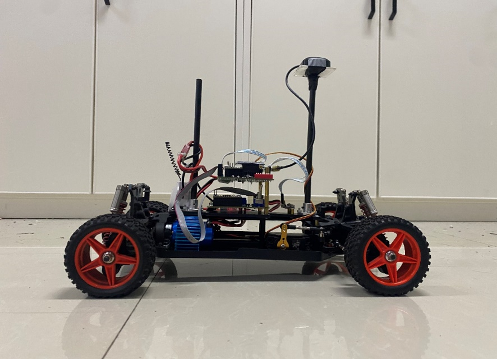

竞赛与嵌入式
智能汽车竞赛-多传感器融合定位与自主导航
融合 GPS、里程计与 IMU，完成车载定位、实时控制和高速自主循迹。
国家二等奖 / 浙江省一等奖
技术实践
- 融合定位： 融合 GPS、轮式里程计与 MEMS IMU 数据，基于 Kalman 滤波实现车辆位置与姿态估计，提高动态行驶过程中的定位稳定性；
- 嵌入式开发： 基于 MM32F527X 单片机与 Keil 开发环境，完成传感器数据采集、导航解算及电机控制程序开发，实现车载实时控制；
- 导航控制： 独立开发自动导航与 PID 闭环控制算法，设计人机交互菜单实现 PID 参数在线调节，完成智能车高速自主循迹，获国家二等奖、浙江省一等奖。
项目图片
